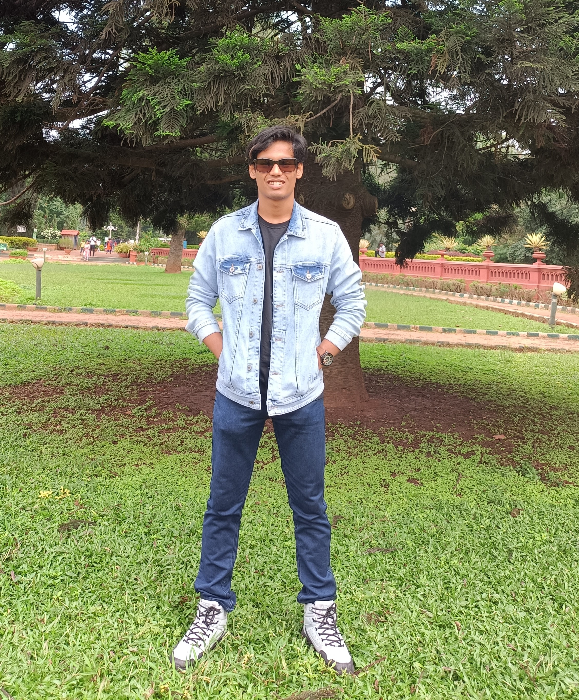

Experience
- Public Relations Head in ESA committee [2022-present]
- Senior Correspondent in Spark (Editorial of SPIT) [2022-present]
- Certificate of distinction in Code-Housie event of CSI-SPIT
- Battery Charger Circuit Using SCR
- AND Gate using BJT in SEQUEL
- Gym Website Using HTML and CSS